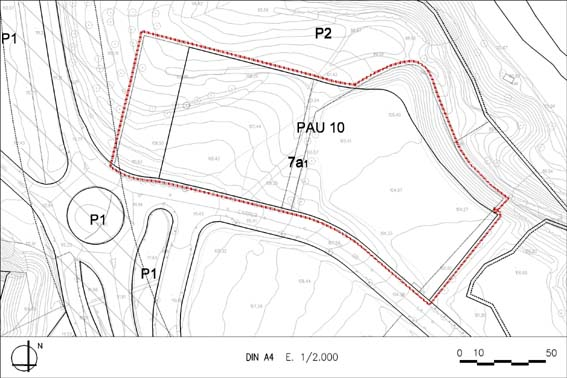

PAU 10 “Farigola” (Polígon d’actuació urbanística PAU – 10)

Règim del sòl: Sòl Urbà No Consolidat
| Superfície del polígon: Ordenació Sistemes urbanístics de cessió: Parc Territorial (P2) Zones edificables: Industrial aïllada, parcel·la petita, agrupació I(clau 7a1) |
17.998 m2s 3.687 m2s 14.311 m2s |
(St) Sostre total |
(Segons aplicació de paràmetres de normes urbanístiques) |